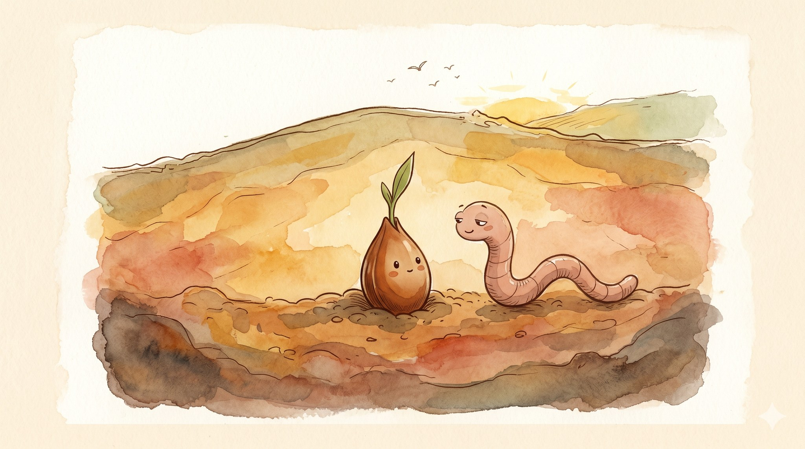
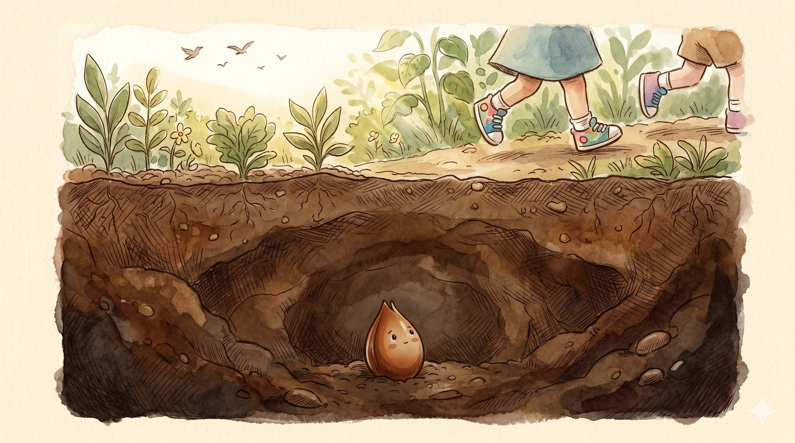
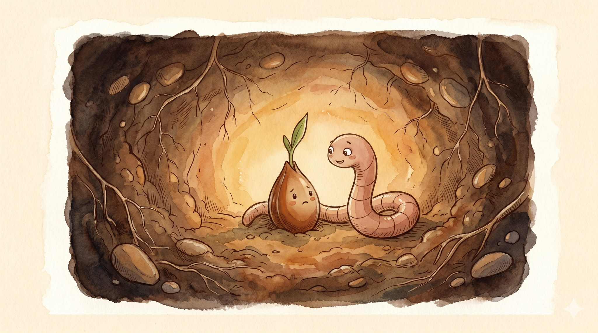
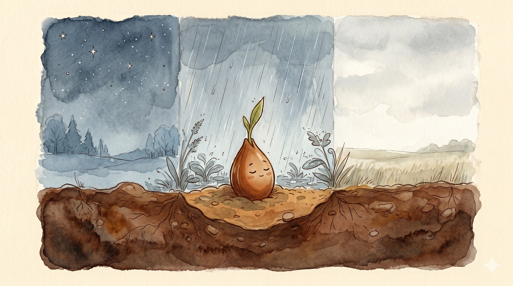
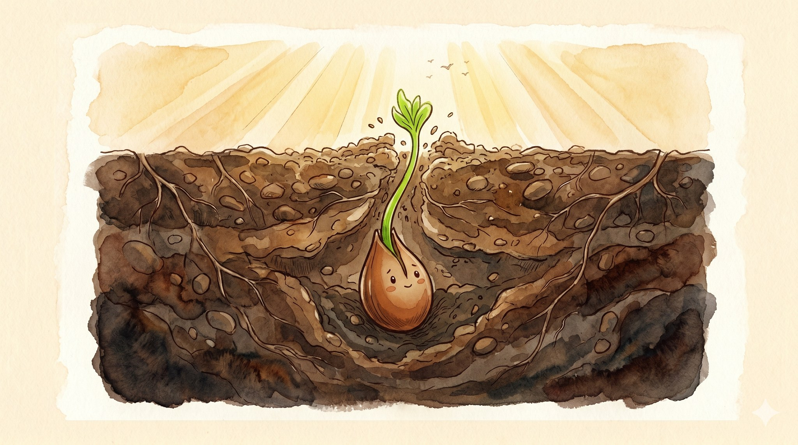
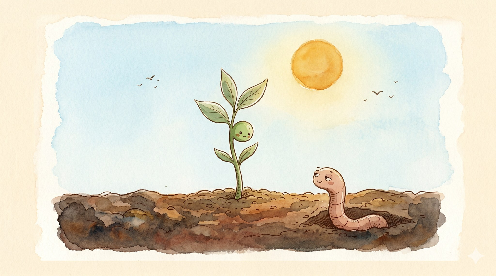

The Brave Little Seed

A story for ages 3–7 about how some good things take a long time, and that is okay

Deep under the garden, where the dirt was dark and warm, a small seed sat very still.
Up above, the world was busy. Birds called across the sky. Rain drummed on the leaves. Children’s feet ran past. Pat, pat, pat.
Everyone up there seemed to know exactly what to do.
The seed felt very small.
“I should be doing something,” it whispered. “Everyone else is.”

One afternoon, a worm came wiggling by.
“Hello, little seed,” said the worm. “You look worried.”
“The birds are flying,” said the seed. “The children are running. The leaves are growing. And I am just sitting here.”
The worm thought about that for a long, slow minute.
“Sitting is doing,” said the worm. “You are getting ready. Some things take a long time to get ready. That is not nothing. That is something important.”

The seed was not so sure. But the worm knew a lot about dirt, so the seed decided to trust the worm.
It sat through three cold nights, when the dirt went cool and still.
It sat through a long gray rain. Drip, drip, drip.
It sat through a soft, quiet week when nothing happened at all.
The seed closed its eyes, and waited.

And then, one golden morning, the seed felt something brand new.
A stretch.
A tiny green stretch, right in the middle of the seed. It pushed up through the dirt. Up through the cool. Up through the dark —
— and out into the bright, bright air.

The seed was a sprout now.
The sprout looked at the sky, which was very blue. It looked at the sun, which was very kind. Then it looked back down at the dark, warm dirt where it had waited for so long.
“Thank you,” it said softly. “I thought I was doing nothing. But I was getting ready the whole time.”
Nearby, the worm peeked out of the soil and smiled a small, happy smile. It did not say anything.
It did not need to.